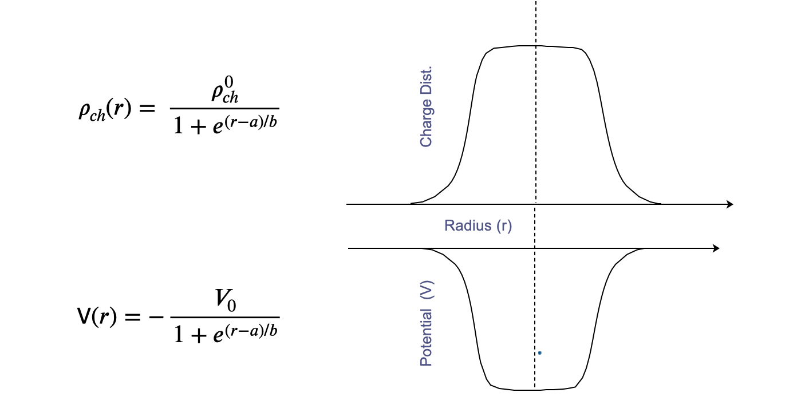
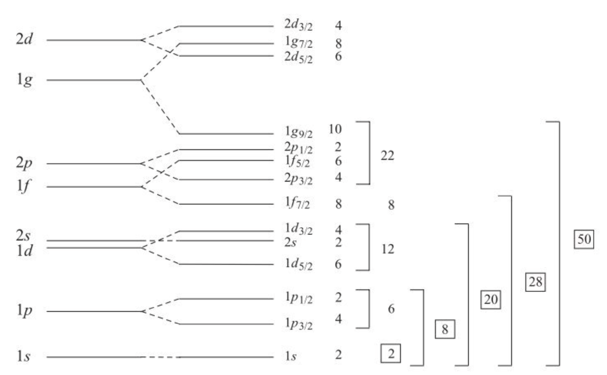

3. Shell Model#
Quick Links
From the Reading List
Shell model. [Martin] Chapter 7.3
Nuclear properties [Krane] Chapter 5
Summary of models [Martin] Chapter 7.5
3.1. Introduction#
We’ve seen how study of the binding energy curve for nuclei and basic features like the chart of stability has led to an empirical formula for the binding energy and the mass of nuclei through the semi empirical mass formula.
However notice how this derivation was only possible by merging two different concepts for nuclei. Firstly, regarding the nucleus as a single drop of Nuclear Material which acts as a Collective Body. Secondly a concept that starts at to look at the quantum behavior of individual nucleons and that they somehow lie in specific (and restricted) Energy Levels. So we have two sorts of model, a Collective Body Model, and an Individual particle Model coming together. They Asymmetry Term and Pairing Term in the SEMF can only be explained assuming this second concept.
We find evidence not only that we need to account for the preference for pairing and balance between neutrons and protons, but also that specific numerical N and Z combinations have very different properties. This results in the observation of Magic Number Nuclei,
These nuclei have particularly stable properties, and mark a transition point for nuclei such that those with \(Z\) or \(N\) below a given Magic Number have very different behavior to those above. This leads to the idea that nucleons in nuclei somehow lie in Concentric Shells, analogous (but very different) to the way electrons lie in shells in atoms and similarly that a “filled” outer shell produces a more stable configuration
This shell model idea is of course tied up with introducing Quantum Mechanics to our nucleus. The basis of QM here as seen before, is that we introduce a nuclear potential well. It is the QM treatment of this Well that will determine (1) the energy levels (shells) that nucleons are allowed to occupy, and (2) how many nucleons can occupy each level.
As an example the simplest model for the Nuclear Well might be that associated with a Harmonic Oscillator, resulting in equally spaced energy levels throughout the well as shown in Fig. 3.1.
{kind=link}
Fig. 3.1 Reminder of harmonic oscillator definition. A potential well results in only discrete energy levels being allowed to be occupied with equal spacing between energy levels.#
But first notice how off the idea is. In atomic physics the well that binds the electrons is the positively charged nucleus. But in this case, the nucleons are somehow orbiting in a potential of their own making. Can this really work? The nucleons are tightly bound in the nucleus with a radius much smaller than the case for electron orbitals. Why don’t they collide if they are orbiting in shells?
This looks like big step to take away from our SEMF so first let’s start by looking at what real evidence we have for a shell-like structure anyway. In fact we can list a range of observations starting with a few charts we have already covered.
3.2. Evidence for Shells#
3.2.1. Binding Energy Shape#
The SEMF does a good job on the basic shape, but a closer look reveals certain nuclei have much higher, or lower B/A than predicted even after our asymmetry and pairing terms are included. These are most obvious at low A where peaks appear in multiples of four nucleons (e.g. 12C, 18O).
In general we see nuclei with Magic Number N and/or Z have a higher B/A indicating they are more tightly bound.
{kind=link}
Fig. 3.2 Ratio of the predictions of the liquid drop model against observations as a function of atomic mass number. We see large deviations at low \(A\) with an almost saw tooth pattern appears at higher \(A\).#
3.2.2. Odd-Even Parabolas#
A closer look at the chart of Nuclides shows that nuclei with N and Z away from the major numbers are more likely to be unstable. If we plot nuclei that lie on a line of a constant A, for example A=121 we find that odd and even A nuclei sit on two separate parabola. Whilst our delta term in the SEMF can account for some of this it cannot account for the difference across all nuclei.
{kind=link}
Fig. 3.3 Binding Energy Curves for two fixed Atomic Mass range of nuclei. We reach a minima at a stable nuclei, but Odd-Even Nuclei show slightly different energies when moving between proton-Even or neutron-Even.#
Based on this we can make a prediction of which isotope of the given A is most stable against Nuclear Decay. From a parabola fit to the data shown of the form
where \(a\), \(b\), and \(c\) are free parameters that are nuclei dependent. We can determine the minima by finding the case where
Whatever the nearest integer value of Z is at the minimum will be the isotope we are after. Notice how the curves are symmetric about the minimum. This leads to the concept of Mirror Nuclei. This refers to a pair of nuclei that have the same \(A\) but where the \(N\) and \(Z\) values are reversed. An example is nitrogen-15 (7 protons and 8 neutrons) and oxygen-15 (8 protons and 7 neutrons).
The nuclear properties of a given Mirror Nuclei pair like this are similar. The chemical properties of the associated neutral atoms (dictated by the electrons determined by the number of protons only) will be very different of course.
3.2.3. The Relative Abundance of Nuclei in Nature#
Another strong piece of evidence for the Shell Model comes from a plot of the Relative Abundance of nuclei in nature vs A. Again we see peaks of high abundance for nuclei with Magic Number values of N, Z, or both. There are a larger number of isotopes and isotones at particular values of Z, N.
The Magic Numbers

Fig. 3.4 Relative Abundance of Nuclei vs A, shows peaks in the abundance close to magic nuclei which suggest potential shell closures making stable nuclei.#
3.2.4. The Neutron Binding Energy#
Apart from the basic binding energy curve, we can look at for instance, the energy required to remove a single neutron from the nucleus vs the neutron number. The plot below shows by how much this differs from the SEMF prediction in MeV. What we see are discontinuities up to 2 MeV at the Magic Numbers. This dependence of the energy to remove the outer neutron is strong evidence for a shell structure. A neutron just above a closed shell looks to be less tightly bound, reminiscent of the alkali metals in the chemical shell structure. This behavior is believed to be due to Shell Closures - it is harder to remove a neutron from a closed shell.

Fig. 3.5 Neutron seperation energy vs Neutron Number. As we approach a shall closure the energy required to remove a neutron reaches a maximum.#
3.2.5. Neutron Capture Energy#
Opposite to the Neutron Binding Energy plot just shown is the Neutron Capture Cross-section of nuclei vs Neutron Number. This measures how likely a given nucleus is to absorb an extra neutron fired at it. Again we see peaks and troughs in the distribution. The lowest values of these are at the Magic Numbers corresponding to filled shells in our model - it is harder to add a neutron when the outer shell is already full.
Note
Note how the cross section is highest for nuclei well away from the Magic Numbers. An example is Cd, which is used widely as a Neutron Sheild in nuclear experiments.
{kind=link}
Fig. 3.6 Neutron capture cross-section (related to probability) as a function of N. As we move away from the shell closures the likelihood of a capture increases.#
3.2.6. Electric Quadrupole Moments#
As nuclei are charged then if this charge is not spherically distributed we might expect to measure a non-zero Electric Quadrupole Moment (we cover EQM later). For a shell model those nuclei with closed shells should be spherically symmetric and have no EQM. For nuclei that do not have a closed shell we indeed see large EQMs.
In the plot below the EQM have been normalized to the size and charge of each nucleus and these so called Reduced Quadrupole Moments are plotted against the number of protons or neutrons - depending upon which is odd. Some EQM are very large, suggesting shapes which are strongly non-spherical.
{kind=link}
Fig. 3.7 Reduced Quadrupole Moment vs A. A value of zero suggests a spherical nucleus.#
3.2.7. Nuclear Excitation Energy#
The relative stability of closed shell nuclei is also indicated by measuring the energy required to take a nucleus from the Ground State to its First Excited State.
Here is an example plot for the excitation energies for the even-A isotopes of lead. The required energy is dramatically larger for the isotope with a Magic Number of neutrons. This is strong evidence for a shell model of the nucleus.
The isotope Pb-208 is particularly unique in being Doubly Magic Z=82 and N=126. This is a Double Closed Shell Nucleus and it takes more than 2 MeV to raise it to the first excited state.
{kind=link}
Fig. 3.8 Nuclear Excitation Energy Diagram. As we reach a magic number, the energy required to excite the nucleus (move a nucleon in to a higher energy level) is significantly higher.#
3.2.8. The existence of double magic nuclei#
So nuclei which have both neutron number and proton number equal to one of the Magic Numbers can be called Double Magic, and are found to be particularly stable.
An example is calcium. It has exceptionally stable Doubly Magic Nuclei - two of them. Compared to the binding energy calculated from the SEMF, they both have much more than the expected binding energy.
These isotopes have Z=20 and N = 20 and 28, all three being magic numbers.
{kind=link}
Fig. 3.9 Measured binding energy compared to the SEMF predictions. When the number of protons or neutrons reach a magic number we see an increase. When both are magic numbers, an even larger increase in binding energy is seen.#
3.2.9. Decay Chains End with Magic Number Nuclei#
Finally, there are several decay chain sequences in nature, particularly that starting U-235. Stable isotopes come at the end of all these principle radioactive series, and all end points have a magic number of protons or neutrons.
3.3. Shell Model Challenge#
All these observations strongly point to a shell like arrangement of nucleons in the nucleus, whereby we envisage Energy Levels in which the nucleons sit, separated by gaps corresponding to the Magic Numbers for both \(Z\) and \(N\) given by:
{kind=link}
Fig. 3.10 Shell Model Spacing Requirement#
Our shell model will need to explain these characteristic numbers using QM to produce the quantized energy levels (shells), filling them with the correct number of states (nucleons) to reproduce the Magic Numbers. So our basic aim is to explain the Magic Numbers, i.e. all the Nuclear Energy Levels, and then hopefully make new predictions that can be tested.
So there is strong evidence for shell structure in Nuclei. This is compatible with a QM description with Nucleons occupying Energy Levels determined by a Central Nuclear Potential Well. We will discuss the form of this potential and the Nuclear Force between nucleons that determines its nature later.
To determine the energy levels in the shell model we need to solve the full time-independent 3D Schrödinger Equation for particle mass \(m\) and wave-function \(\psi\) which has the form:
For a given nucleon, the forces acting on it by all the other nucleons in the nucleus can be presented to first approximation by an average potential \(V(r)\) which only depends on distance from the core. We call this the Shell Theory Potential.
The origin of this potential \(V(r)\) is in the force that holds individual nucleons together, the Nuclear Force or N-N potential. So it is reasonable to assume that the form and depth of \(V(r)\) should reflect the overall density distribution of the nucleons in the nucleus.
Right now we take the mass distribution given previously from the Saxon Woods
and invert it to get the potential \(V(r)\). It is this function that goes into the Schrödinger equation to get the Energy Levels.

The basis of this nuclear potential shape, for instance its spatial radius, is the force between nucleons, the Nuclear Force, that keeps nucleons bound together. This gives us our Average Potential with radius of the nucleus (\(A^{1/3}\)), much bigger than the range of the Nuclear Force (about 1.4 or so). Anyway for now we will just start to describe the QM result, the Shell Model in more detail, and how this helps explain many of the observed properties of Nuclei.
In the shell model now since we are assuming spherical symmetry in our potential and the nucleus, we can simplify the spherical coordinates, splitting \(\psi(r,\theta,\phi) = \Psi(r)\Theta(\theta)\Phi(\phi)\).
We will avoid fully deriving this for now as the focus on this course is the implications that a full QM approach has on the behavior of our nucleons.
A major point is to realize that although nuclei are composed of nucleons they largely act as an isolated single entity. In particular they have a well defined Total Angular Momentum called Nuclear Spin, \(I\). Nucleons themselves also have Angular Momentum (\(l\)) and Intrinsic Spin (\(s\)). The vital point in our QM shell model is that the \(l\) and \(s\) of all the nucleons together determines the Total Nuclear Spin \(I\) of a nucleus.
The result of treating the nucleus in this way we will see is the ability to now predict
Nuclear Magic Numbers
Nuclear Spin \(I\)
Nuclear Parity \(\pi\)
And quite good, but not prefect, predictions of
Nuclear Magnetic Moments
Nuclear Electric Quadrupole Moments
Excited States
The key to this is to work out the Shell Energy Levels and then determine how many nucleons are allowed to occupy each level as determined by QM and the Exclusion Principle.
3.4. Shell Model Quantum Mechanics#
We start by considering the QM behavior of an individual nucleon (p or n) in the Central Potential Well of the nucleus. When we invoke QM, by applying the Schrödinger equation to solve the three dimensional system we end up with an Angular Momentum Quantum Number, \(l\), that tells us about the spatial behavior of wave function of each nucleon and defines the energy levels oof the nucleons as a result. In our simple central potential model all nucleons with the same \(l\) have the same energy but we will see that it is a new quantum number \(j\) that defines the actual number of states at a specific energy.
The magnitude of \(l\) is given by
The angular motion is a constant of the motion and the uncertainty principle gives us certain allowed “substates” of \(l\) which we will label \(m_{z}\).
Nucleons also have an Intrinsic Angular Momentum called Spin \(s\) such that
We find that similar to the angular momentum case this also has certain allowed spin substates, however these can only correspond to spin-up, or spin-down.
The two quantum numbers \(l\) and \(s\) can vector couple to give a new quantum number \(j\), known as the Total Angular Momentum Quantum Number for the nucleon. In nuclear systems it is the \(j\) that is regarded as the “good” quantum number. The vector addition in this case is simply obtained from the possible combinations of \(m_{z}\) and \(m_{s}\) given what we know about possible values for \(l,s,j\). In the figure below we can see the calculation of the quantum number \(j\) represented as a combination of different arrows for \(l\) and \(s\). If \(l\) and \(s\) are parallel (both positive) then we get higher values of \(j\) than if they are anti-parallel.
Note
Remember a good quantum number is a quantity that remains constant and is conserved during a particular physical process or set of operations.
We have seen that \(m_{z}\) is always integer and \(m_{s}\) is always half-integer +1/2 or -1/2. The same is true for the \(l\) and \(s\) quantum numbers. When we vector couple \(l\) and \(s\) together to make \(j\) we simply add the possibilities, so this means \(j\) is also always going to be half-integer. Since the spin can only be aligned parallel or anti-parallel to the the angular momentum we expect allowed values of \(j\) to only be \(j\pm\frac{1}{2}\). For example for \(l=2\) states the allowed values of \(j\) are \(j=\frac{5}{2}\) and \(j=\frac{3}{2}\).
A summary of what we expect for each number is below.
\(l\) - from orbital angular momentum number [Integer]
\(s\) - from orbital angular momentum number [Half-Integer]
\(j\) - from orbital angular momentum number and spin [Half-Integer]
3.4.1. Simple Potential Example#
Let’s consider a simple case below by calculating the number of states in the \(l=0\) and \(l=1\) case to see if it makes sense based on the Magic Number shell information we are aware off.
In the case of the ground shell we just have \(l=0\), this means \(m_{z}\) can only be \(0\), and \(m_{s}\) can only be \(\pm \frac{1}{2}\). The result is we have two allowed states for the \(j=\frac{1}{2}\) case as shown in Fig. 3.11
{kind=link}
Fig. 3.11 Diagram shell filling in a simple spherical model for the lowest energy shell.#
Now as we increase the possible \(l\) state it is the \(j\) value for a specific shell that is going to tell us how to fill up the Shell Energy Levels. For instance, in the new example shown below we choose level \(l=1\) as shown in Fig. 3.12 we find we are allowed total \(j\) values = \(\pm\frac{1}{2}\) and \(\pm\frac{3}{2}\). This is because in our new shell we have the two similar \(m_{z}=0\) cases as before (states 5 and 6), but also four new ones, corresponding to the case where \(m_{z}=1\).
{kind=link}
Fig. 3.12 Diagram shell filling in a simple spherical model for the lowest energy shell.#
Clarification.
The parallel (stretched) states above are always the ones with maximum \(j\) value equal to \(j=|l+s|\). The anti-parallel (jack-knife) states are always the ones with maximum \(j\) value equal to \(j=|l-s|\).
Each nucleon must have its own allowed state of \(m_z\) and \(m_s\) when considering possible values of \(j\). As shown in the figure this results in six possible states \(3/2, 1/2, -1/2, -3/2\) for \(j=3/2\), and \(1/2, -1/2\) for \(j=1/2\). The cases where the angular momentum is parallel or anti-parallel are sometimes referred to as stretched and jacknife states respectively.
Similarly if we repeated the same process for \(l=2\), we would have possible \(j\) values of \(\frac{5}{2},~\frac{3}{2},~\frac{1}{2}\) implying a total of 10 nucleon states allowed. The sequence for our simple model can be expressed as
It is important to remember when calculating these state that protons and neutrons are counted separately here. So for instance the \(l=2\) level can have up to 10 protons AND 10 neutrons inside the shell.
3.5. Nucleon and Level Notation#
Based on this a notation for labelling levels has been developed in Nuclear Physics as in Fig. 3.13. This is annoyingly similar looking to that used for electrons in atomic orbits but is actually very different so be careful not to mix them up.
{kind=link}
Fig. 3.13 Nuclear notation guide.#
Note that we just state here a further label \(n\) for the basic energy level which comes from assuming a quantum well binding the nucleons together. Full derivation of this is outside our scope here, so for now we just recognize that higher values of \(n\) correspond to higher energies. However we can now easily label each of our shell states based just on known values of \(n\), \(l\), and \(j\). For example for \(n=2\), \(l=1\) we have \(2\textnormal{p}_{3/2}\) (4 nucleon states) and \(2\textnormal{p}_{1/2}\) (2 nucleon states).
3.6. First Model Predictions#
We can now attempt a first prediction with this model, i.e. can we account for the Magic Numbers? We expect for the \(n=1\) state we would start to fill our shells up based on:
For \(l=0\) we expect \(2(2\times 0 + 1)=2\) states [2 total].
For \(l=1\) we expect \(2(2\times 1 + 1)=6\) states [8 total].
For \(l=2\) we expect \(2(2\times 2 + 1)=10\) states [18 total].
For \(l=3\) we expect \(2(2\times 3 + 1)=14\) states [32 total].
We expect to fill up our shells in terms of increasing energy. So based on this very simple model we would expect the first shell to close after 2 nucleons, and the second after 8. It gets a little bit more complex after that as the energy gaps of the principal quantum states \(n\) start to overlap with the angular momentum splittings.
{kind=link}
Fig. 3.14 Shell closure result for a simple spherical shell model.#
We find as our shell closures:
Although we get the first few Magic Numbers correct \((2, 8,\) and \(20)\), the higher levels are completely wrong. The next two shells suggested by nature are actually at \(28\) and \(50\). Trying modifications to the shape of our potential well can help a bit but not enough to make new shells so low, instead an extra term is needed in our model.
3.7. Spin Orbit Corrections#
The answer turns out to be a so-called Spin orbit Coupling term. The propoosal of this critical extra term in the Nuclear Potential was made in 1949 by Maria Goeppert Mayer and Johannes Jense, recognised by award of the Nobel Prize in 1963 - together with Eugene Wigner.
The basis is to introduce a further contribution to the internuclear force and hence the potential \(V(r)\) that depends on the orientation of the spin \(s\) and angular momentum \(l\). This extra factor causes a re-ording of the energy levels
Recall how the Nuclear Potential Well shape (we said it comes from the Saxon Woods distribution of matter above) determines the energy levels. The Spin Orbit Correction changes this shape. The potential is deeper (nucleons are more strongly attracted) if the \(l\) and \(s\) are aligned parallel, and less deep (nucleons repulsed more) if they are aligned anti-parallel.
If the nucleon is deep inside the nucleus then it also encounters many other nucleons with Spin-Up as Spin-Down and so the effect will average out, but it does not average everywhere, particularly close to the edges of the nucleus. The effect of this is to break the degeneracy in the assignment of nucleon energy levels by introducing new energy levels depending on the \(j\) value.
For instance, consider the \(l=1\) level. Previously this had 6 nucleons, \(3/2, 1/2, -1/2, -3/2\) (for the \(j=3/2\)) and 1\(/2, -1/2\) (for the \(j=1/2\)) all in the same level. Now the \(j=3/2\) nucleons (parallel \(l\) and \(s\)) get their own new, lower, energy level. The \(j=1/2\) nucleons (anti-parallel \(l\) and \(s\)) get their own new, higher, energy level.
So the former degeneracy in which we had to consider all these 6 nucleons in one level is broken, and the previous single energy level becomes two, at different levels.
{kind=link}
Fig. 3.15 Diagram of shell state splitting when spin-orbit coupling is included.#
Clarification.
The parallel (stretched) states above are always the ones with maximum \(j\) value equal to \(j=|l+s|\). The anti-parallel (jack-knife) states are always the ones with maximum \(j\) value equal to \(j=|l-s|\).
This effect applies for all the \(l\) levels, they all get split into two levels, except for \(l\)=0 (the \(\textnormal{s}\) sharp) one because that only has one \(j\) assignment, \(j=1/2\) \((\)with values \(1/2, -1/2\)\()\).
3.8. Modified Shell Model#
The effect of the Energy Levels splitting is dramatic. As shown below it changes the position of the gaps, and can also make neighboring \(j\) states jump over one another. To calculate this what we need to do is work our way successively up the shells, first figuring out how many energy states there are given \(j\), and then figuring out which correspond to parallel anti-parallel combinations. See how this gives the necessary extra splitting in the figure below. The number of states for each \(l\) remains, we just break the degeneracy, creating more levels. We see a different clustering of levels, and different major “gaps” corresponding to our magic numbers. Notice for instance how the \(1\textnormal{g}\) level splits. All the \(1g_{9/2}\) nucleons get moved down and the \(1\textnormal{g}_{7/2}\) ones go up, creating a new gap when the total of 50 nucleons is reached.

Importantly this one small change to the model now gives us the right Magic Number sequence:
You’ll notice that in some of my examples I’ve mentioned 14 as a possible shell. This is because the energy gap for the \(1d_{5/2}\) state means it appears to give the impressions of shell closures in some datasets, but it is not as strong as some of the main magic numbers.
The ability to describe the Magic numbers is a great success of the shell model. We now have a way to explain how protons and nucleons structure themselves inside our nucleus. In the next unit we’ll discuss how this can be used to estimate some other observed properties of the nucleus, such as parity and the magnetic moment.